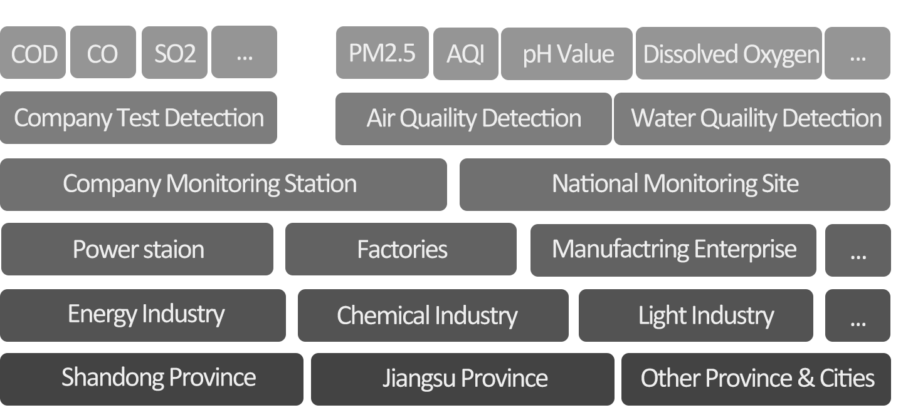
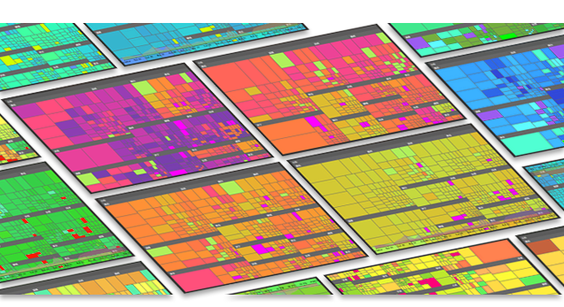

With an intention to raise the public’s awareness and attention to pollution issues, P-Hunter, from different angles, converted original pollution monitoring data into targeted data visualization products that could satisfy the public’s demand for knowledge about detecting pollution at different levels.
This work has won a Global Merit Award in the Ali Data Visualization Competition. Having been engaged in data visualization and interactive design for three months, I took full participation in the project development process as a UX designer and Front End Developer.
After obtaining relevant data, I determined the product orientation to improve public’s awareness of pollution issues by using User-Centered Design methodology. Through a matching and screening between users’ demand and data features, I divided different users’ demand for data into three types. I also used my sketches to present disparate possibilities of interactive interfaces, which helped the team reach consensus in just one discussion. Moreover, I set good preparation for product development by drawing frameworks through AxureRP and thus developer could choose suitable visualized charts and designer could create visual communication of interface accordingly. The clear orientation and work division I made has enabled us to finish the product development in just three weeks.
The average PM2.5 concentration has reached 102μg/m3 in Beijing-Tianjin-Hebei Region with a population of 130 million, and this is just the beginning of the four-month heating season with frequent hazy days in North China, said Luo Yi, director of Department of Environmental Monitoring, Ministry of Environmental Protection, NOV 2016.
Data from World Health Organization (WHO) showed the safe level of PM2.5 was 10μg/m3. China adopted the widest PM2.5 limits of WHO as its standards: yearly average PM2.5 concentration was 35μg/m3 and daily average PM2.5 concentration was 75μg/m3.
It was revealed that death risk began to increase if PM2.5 concentration stayed higher than 10μg/m3. For every increase of 10μg/m3 in PM2.5, total death risk increased by 4%, death risk caused by heart and lung diseases rose by 6% and death risk caused by lung cancer grew by 8%. Analyzing such data, we can find it evident that our current environment is not suitable for human beings to live in at all.


Original Data Set of Pollution Monitoring
Invalid data and abnormal data were almost removed after I cleansed the original data by Excel. The original data had some noise such as incomplete data set, incompatible formats, and information deficiency. The data cleansing cut the data set by 15%. In order to satisfy specific users’ requirements (the comparison between economy and pollution), I collected the GDP development data of Shandong Province between 2015 and 2016 later on.

Data Hierarchy
The data set involved 1366 pollutional enterprises from in Jiangsu Province and Shandong Province. They came from transportation industry, equipment manufacturing industry, power plant, textile industry, sewage treatment industry, chemical production industry, etc. Besides, the data were collected in 186 official pollution monitoring stations and 17 sewage monitoring stations.
Through characteristics of data set, time nodes in pollution monitoring, position data of monitoring stations, and pollutant detection details, one-dimensional data comparison can be conducted for various purposes(which is far away from enough for the goal), such as evaluating the reasonability of station location and recognizing the types of abnormal pollutants.
This product aims to raise awareness about pollutional issues among the public. Based on this target, I figured out different demands of different users on pollutional detection. Moreover, I classified the public into three groups in need for pollution monitoring products by understanding at different levels of pollution issues.

Through matching the data dimension provided by data set, data visualization was oriented. Pollutional information at three levels made up a pollution data visualization product based on user demand.
In order to find the most suitable data-vis methods to present the data and meet the goals we set, I actively worked with the developer to find the most appropriate data visualizaiton charts and iterated many times.
Through studying the visualization materials on D3.js and three.js, two data visualization resource websites, I quickly sketched several visual diagrams of different types and embedded them into webpages. Thus, different possibilities were presented to the team, and then, an agreement was reached right after a discussion. Furthermore, by AxureRP, I drew a wireframe diagram that served as a target for the programmers to focus on developing visual diagrams and provided a foundation based which the designers designed the visual system.
Links of the three parts are integrated as a whole. Related data news and data visualization diagrams are output after the keywords of cities, regions and enterprises are input by users. Users can also click the designed links and get redirected to any of the three parts to conduct personalistic operations.
Abnormal pollution detection data at the user’s location can be compared with historical data and then output data news to provide more pollution insights for citizens. For instance, this product can provide help for users in making decisions upon investing in real estate in different regions and cities.
The map can visually present the pollution detection status around the users’ site, such as wind direction, wind power, plants distribution and monitoring stations distribution.
User click the color block and check the specific pollution discharge of certain enterprise
Tree graph has big advantages over bubble diagram and bar graph in terms of indicating enterprises’ pollutional trend. The integrated data of pollutant emission trend, total pollution amount, pollutional degree, and urban pollutional situation can be cross-compared and linked. While multi-dimensional data being presented, the webpage space can be as much utilized as possible.

Slices of Tree Graph and Analysis
By visually comparing monthly pollution data, it was found that most enterprises’ pollutant emission amount reached top at the end of a month. The reason for this remained to be discovered by more research.
<--User click the color 3D Bar graph to check the specific relationship between Economy development and pollution discharge in one city
One of data visualization’s advantages, “vivid”, was presented when the pollutional situation and economic development were cross-compared. In December, Qingdao City, with a GDP value of CNY 77.5 billion, had 81 pollutional enterprises, while Zibo City with a population of 3 million and a GDP value of CNY 33.4 billion is the place in which 108 pollutional enterprises are located in. It’s evident that pollutional enterprises are intensively located and the pollution degree is severe in the northwest of Shandong Province.
Through data comparison in industrial structure, we could recognize central and western cities’ dependence on secondary industry and the development of eastern coastal cities in tertiary industry such as Qingdao. The above was clearly pictured by visual diagrams. Policies concerning economic structure adjustment and pollution control remain to be thought over and optimized by the government.
© 2017 Xunan Zhou All rights Reserved